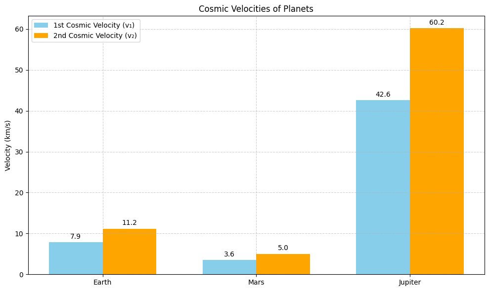
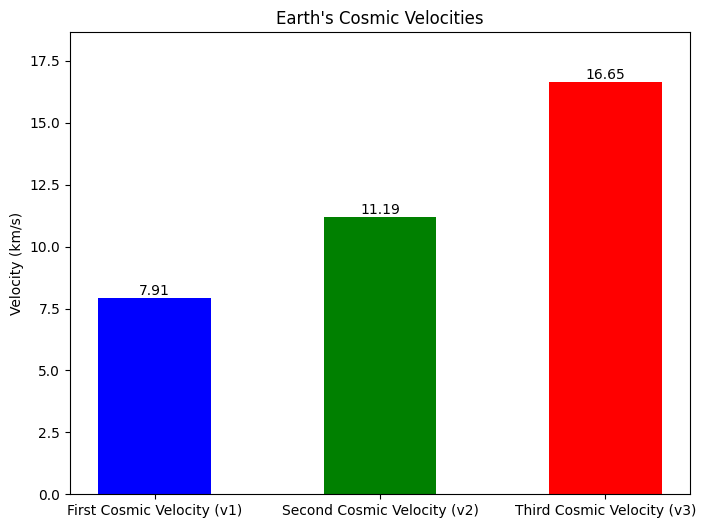

Problem 2
Escape Velocities and Cosmic Velocities Definitions and Physical Meaning First Cosmic Velocity (Orbital Velocity):
Definition: The minimum velocity needed for a body to enter a stable circular orbit just above the surface of a celestial body.
Physical Meaning: It's the speed at which an object must travel horizontally so that its centrifugal force balances gravitational pull.
Formula:
$$ 𝑣1=\sqrt{\frac{𝐺𝑀}{R}} $$
where:
• G is the gravitational constant,
• M is the mass of the celestial body,
• R is the radius from the center of the body to the orbit.
Second Cosmic Velocity (Escape Velocity):
Definition: The minimum speed needed to break free from a celestial body's gravitational field without further propulsion.
Physical Meaning: Allows a spacecraft to escape into space without falling back.
Formula:
Third Cosmic Velocity (Solar System Escape Velocity):
Definition: The minimum speed required to escape the gravitational influence of the Sun from Earth's orbit.
Physical Meaning: It allows a spacecraft to leave the solar system.
Formula (from Earth’s orbit):
where \(v_{orbital sun}≈29.78km/s\) is Earth’s orbital speed around the Sun.
Mathematical Derivation Overview
The basic concept relies on conservation of mechanical energy (kinetic + potential):
• Total energy \(E =\frac{1}{2} m v^2 -\frac{G M m}{R}\)
• For escape \(𝐸≥0\) → solve for 𝑣
For orbital motion, balance centripetal and gravitational forces:
Velocities for Earth, Mars, and Jupiter
import numpy as np
import matplotlib.pyplot as plt
# Universal gravitational constant (m^3 kg^-1 s^-2)
G = 6.67430e-11
# Planet data: (name, mass [kg], radius [m])
planets = {
"Earth": (5.972e24, 6.371e6),
"Mars": (6.417e23, 3.389e6),
"Jupiter": (1.898e27, 6.991e7),
}
# Compute velocities
first_cosmic = {}
second_cosmic = {}
for planet, (mass, radius) in planets.items():
v1 = np.sqrt(G * mass / radius) # First cosmic velocity (orbital)
v2 = np.sqrt(2 * G * mass / radius) # Second cosmic velocity (escape)
first_cosmic[planet] = v1 / 1000 # Convert to km/s
second_cosmic[planet] = v2 / 1000
# Visualization
labels = list(planets.keys())
v1_values = [first_cosmic[p] for p in labels]
v2_values = [second_cosmic[p] for p in labels]
x = np.arange(len(labels))
width = 0.35
fig, ax = plt.subplots(figsize=(10, 6))
bars1 = ax.bar(x - width/2, v1_values, width, label='1st Cosmic Velocity (v₁)', color='skyblue')
bars2 = ax.bar(x + width/2, v2_values, width, label='2nd Cosmic Velocity (v₂)', color='orange')
ax.set_ylabel('Velocity (km/s)')
ax.set_title('Cosmic Velocities of Planets')
ax.set_xticks(x)
ax.set_xticklabels(labels)
ax.legend()
ax.grid(True, linestyle='--', alpha=0.6)
# Add value labels on top of the bars
for bar in bars1 + bars2:
height = bar.get_height()
ax.annotate(f'{height:.1f}',
xy=(bar.get_x() + bar.get_width() / 2, height),
xytext=(0, 3), textcoords="offset points",
ha='center', va='bottom')
plt.tight_layout()
plt.show()

Importance in Space Exploration
Launching Satellites:
• Satellites are placed in orbit using the first cosmic velocity.
• Geostationary, polar, and LEO satellites require precise velocity control.
Interplanetary Missions:
• Second cosmic velocity allows probes (like Voyager, New Horizons) to escape Earth.
• Gravity assists and orbital slingshots optimize fuel use for Mars, Jupiter missions.
Interstellar Travel:
• Third cosmic velocity (and more) is necessary for leaving the solar system.
• Technologies like ion drives and solar sails aim to reduce fuel constraints.
import numpy as np
import matplotlib.pyplot as plt
# Constants
G = 6.67430e-11 # Gravitational constant (m^3 kg^-1 s^-2)
M_earth = 5.972e24 # Mass of Earth (kg)
R_earth = 6.371e6 # Radius of Earth (m)
M_sun = 1.989e30 # Mass of the Sun (kg)
AU = 149.6e9 # 1 AU in meters
# First cosmic velocity (v1) - Circular orbit velocity
v1 = np.sqrt(G * M_earth / R_earth) / 1000 # Convert to km/s
# Second cosmic velocity (v2) - Escape velocity
v2 = np.sqrt(2 * G * M_earth / R_earth) / 1000 # Convert to km/s
# Third cosmic velocity (v3) - Escape from Sun's gravity
# Earth's orbital velocity around the Sun
v_orbit = np.sqrt(G * M_sun / (AU)) / 1000 # km/s
# Escape velocity from Sun at 1 AU
v_esc_sun = np.sqrt(2 * G * M_sun / (AU)) / 1000 # km/s
# Additional velocity needed to escape Sun
delta_v = v_esc_sun - v_orbit
# Total v3 (combine v2 and delta_v)
v3 = np.sqrt(v2**2 + delta_v**2)
# Data for plotting
velocities = [v1, v2, v3]
labels = ["First Cosmic Velocity (v1)", "Second Cosmic Velocity (v2)", "Third Cosmic Velocity (v3)"]
# Create bar chart
fig, ax = plt.subplots(figsize=(8, 6))
bars = ax.bar(labels, velocities, color=["blue", "green", "red"], width=0.5)
# Add value labels on top of bars
for bar in bars:
height = bar.get_height()
ax.text(bar.get_x() + bar.get_width()/2, height, f"{height:.2f}", ha="center", va="bottom")
# Customize the plot
ax.set_ylabel("Velocity (km/s)")
ax.set_title("Earth's Cosmic Velocities")
ax.set_ylim(0, max(velocities) + 2) # Adjust y-axis limit for better visibility
# Save the plot
plt.savefig("earth_cosmic_velocities.png")
